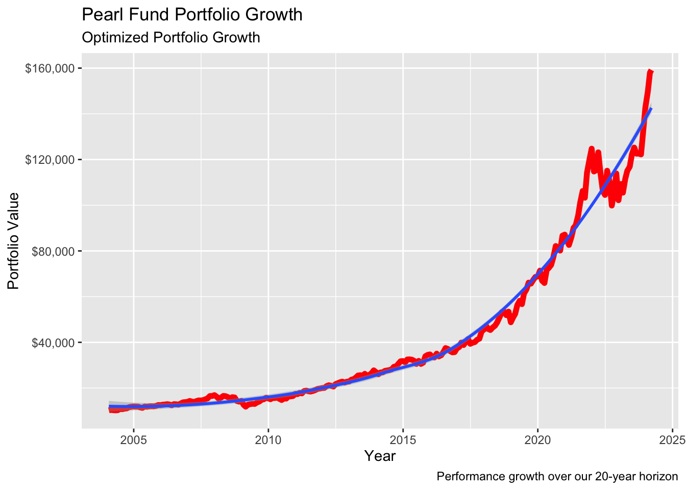
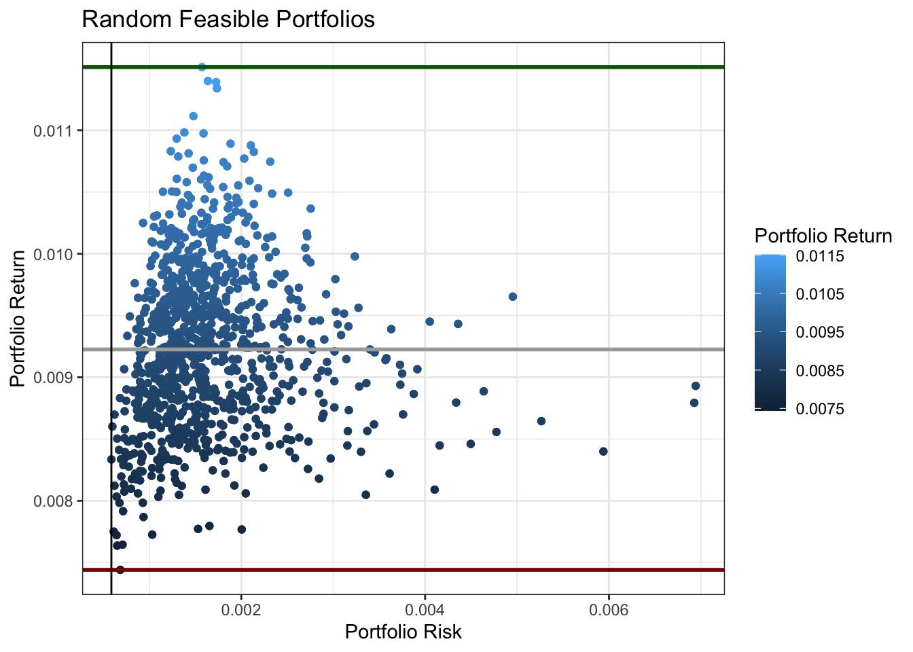
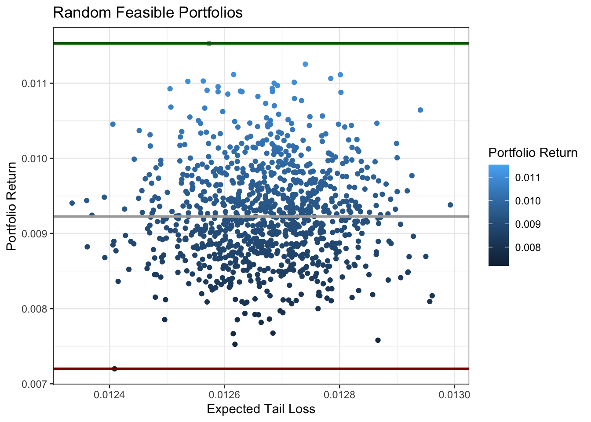

suppressWarnings(suppressPackageStartupMessages({
library(tidyverse)
library(ggplot2)
library(plotly)
library(knitr)
library(tidyquant)
library(corrplot)
library(quantmod)
library(gganimate)
library(PerformanceAnalytics)
library(PortfolioAnalytics)
library(DEoptim)
library(ROI)
library(tseries)
library(TTR)
library(fPortfolio)
require(ROI.plugin.glpk)
require(ROI.plugin.quadprog)
}))Pearl Fund: A Guide on Portfolio Anlaysis & Optmization
Overview
In this project, our primary goal is to enhance the risk-adjusted returns of a carefully curated portfolio of stocks. The focus of our analysis is on a select 5-stock portfolio, nicknamed — “Pearl Fund.” This portfolio comprises stocks & ETFs from a diverse array of industries and asset classes, namely:
- Chevron Corporation (NYSE: CVX)
- Costco Wholesale Corporation (NASDAQ: COST)
- Ford Motor Company (NYSE: F)
- HP Inc. (NYSE: HPQ)
- Johnson & Johnson (NYSE: JNJ)
- JPMorgan Chase & Co. (NYSE: JPM)
- Microsoft Corporation (NASDAQ: MSFT)
- PepsiCo, Inc. (NASDAQ: PEP)
- Procter & Gamble Company (NYSE: PG)
- Raytheon Technologies Corporation (NYSE: RTX)
- iShares 20+ Year Treasury Bond ETF (NASDAQ: TLT)
Our approach involves the utilization of sophisticated financial models, which will be thoroughly explained later in this documentation. Furthermore, we leverage the power of various statistical and financial packages. We use th R programming language as our preferred tool for seamless portfolio optimization. Through a comprehensive analysis of historical data, we aim to evaluate and compare the performance of our portfolio against two benchmark index funds—S&P 500 and NASDAQ.
Before proceeding, ensure that the following libraries are installed and imported for seamless execution of the project:
Equity Analysis
Our analysis spans from January 1, 2004, until the latest market day close, providing a comprehensive view of various economic scenarios, including critical events such as the global financial crisis of 2008 and the SARS COVID-19 epidemic in 2020. We use the FRED economic data set to retrieve the most recent 10-year Treasury yields for our statistical testing we will run later.
stock_tickers <- c("TLT", "MSFT", "HPQ", "COST", "F", "PEP", "JPM", "RTX", "PG", "CVX", "JNJ")
# Treasury Yields (FRED)
ten_year_treasury_yield_table = arrange(tq_get("DGS10", get = "economic.data"), desc(date))
latest_ten_year_treasury_yield = slice(ten_year_treasury_yield_table, 1)$price
cat("Latest 10-year Treasury Yield: ",latest_ten_year_treasury_yield,"%")Latest 10-year Treasury Yield: 4.29 %Monthly Returns (Table View)
We proceed to collect our monthly stock returns using the tidyquant functions. We split this dataset into two sets, one set ranging from 2004 to 5 years prior to th ecurrent date and another one from the previous 5 years. After some data pre-processing, we display the 5 most recent monthly returns for each of our stocks for the entire timeline below.
stock_returns_monthly_full_raw <- tq_get(stock_tickers, get = "stock.prices", from = "2004-01-01", to = Sys.Date())
# Transformed Monthly Stock Returns (long format)
stock_returns_monthly_full_long = stock_returns_monthly_full_raw %>% group_by(symbol) %>% tq_transmute(select = adjusted, mutate_fun = periodReturn, period = "monthly", col_rename = "MonthlyReturnsFull")
# Transformed Monthly Stock Returns (wide format)
stock_returns_monthly_full_wide = pivot_wider(stock_returns_monthly_full_long, names_from=symbol, values_from=MonthlyReturnsFull)
# Displays the most recent 5 monthly stock returns
stock_returns_monthly_full_wide_decreasing = stock_returns_monthly_full_wide[order(stock_returns_monthly_full_wide$date, decreasing = TRUE), ]
head(stock_returns_monthly_full_wide_decreasing, 5)# A tibble: 5 × 12
date TLT MSFT HPQ COST F PEP JPM RTX
<date> <dbl> <dbl> <dbl> <dbl> <dbl> <dbl> <dbl> <dbl>
1 2024-03-15 -0.0101 0.00672 0.0835 -0.0245 -0.0305 -0.00411 0.0228 0.0364
2 2024-02-29 -0.0225 0.0423 -0.0132 0.0721 0.0901 -0.0114 0.0671 -0.00943
3 2024-01-31 -0.0225 0.0573 -0.0459 0.0527 -0.0386 -0.00771 0.0314 0.0830
4 2023-12-29 0.0869 -0.00757 0.0350 0.139 0.188 0.00921 0.0898 0.0326
5 2023-11-30 0.0992 0.123 0.114 0.0749 0.0523 0.0385 0.122 0.00849
# ℹ 3 more variables: PG <dbl>, CVX <dbl>, JNJ <dbl>The data set below shows the last 5 monthly returns from 2004 to 5 years prior to today’s date.
# Raw Stock Monthly Returns
stock_returns_monthly_raw <- tq_get(stock_tickers, get = "stock.prices", from = "2004-01-01", to = Sys.Date() - 1815)
# Transformed Monthly Stock Returns (long format)
stock_returns_monthly_long = stock_returns_monthly_raw %>% group_by(symbol) %>% tq_transmute(select = adjusted, mutate_fun = periodReturn, period = "monthly", col_rename = "MonthlyReturns")
# Transformed Monthly Stock Returns (wide format)
stock_returns_monthly_wide = pivot_wider(stock_returns_monthly_long, names_from=symbol, values_from=MonthlyReturns)
# Displays the most recent 5 monthly stock returns
stock_returns_monthly_wide_decreasing = stock_returns_monthly_wide[order(stock_returns_monthly_wide$date, decreasing = TRUE), ]
head(stock_returns_monthly_wide_decreasing, 5)# A tibble: 5 × 12
date TLT MSFT HPQ COST F PEP JPM RTX
<date> <dbl> <dbl> <dbl> <dbl> <dbl> <dbl> <dbl> <dbl>
1 2019-03-28 0.0567 0.0437 -0.0288 0.103 0 0.0536 -0.0350 0.0127
2 2019-02-28 -0.0138 0.0774 -0.104 0.0219 -0.00341 0.0347 0.00831 0.0707
3 2019-01-31 0.00379 0.0282 0.0767 0.0536 0.170 0.0198 0.0688 0.109
4 2018-12-31 0.0585 -0.0840 -0.104 -0.119 -0.187 -0.0868 -0.122 -0.126
5 2018-11-30 0.0179 0.0427 -0.0472 0.0140 -0.0147 0.0851 0.0199 -0.0135
# ℹ 3 more variables: PG <dbl>, CVX <dbl>, JNJ <dbl>We repeat the above process for the 2nd batch of monthly stock returns which lasts for the last 5 years.
stock_returns_monthly_test_raw <- tq_get(stock_tickers, get = "stock.prices", from = Sys.Date() - 1815, to = Sys.Date())
stock_returns_monthly_test_long = stock_returns_monthly_test_raw %>% group_by(symbol) %>% tq_transmute(select = adjusted, mutate_fun = periodReturn, period = "monthly", col_rename = "MonthlyReturns2nd")
stock_returns_monthly_test_wide = pivot_wider(stock_returns_monthly_test_long, names_from=symbol, values_from=MonthlyReturns2nd)
stock_returns_monthly_test_wide_decreasing = stock_returns_monthly_test_wide[order(stock_returns_monthly_test_wide$date, decreasing = TRUE), ]
head(stock_returns_monthly_test_wide_decreasing, 5)# A tibble: 5 × 12
date TLT MSFT HPQ COST F PEP JPM RTX
<date> <dbl> <dbl> <dbl> <dbl> <dbl> <dbl> <dbl> <dbl>
1 2024-03-15 -0.0101 0.00672 0.0835 -0.0245 -0.0305 -0.00411 0.0228 0.0364
2 2024-02-29 -0.0225 0.0423 -0.0132 0.0721 0.0901 -0.0114 0.0671 -0.00943
3 2024-01-31 -0.0225 0.0573 -0.0459 0.0527 -0.0386 -0.00771 0.0314 0.0830
4 2023-12-29 0.0869 -0.00757 0.0350 0.139 0.188 0.00921 0.0898 0.0326
5 2023-11-30 0.0992 0.123 0.114 0.0749 0.0523 0.0385 0.122 0.00849
# ℹ 3 more variables: PG <dbl>, CVX <dbl>, JNJ <dbl>Stock Growth & Monthly Returns (Graph View)
Displayed below is a graphical representation of the total returns (%) for our chosen stocks covering the chosen time period. To facilitate accurate time series analysis, the data has been standardized.
stock_returns_monthly_raw1 <- stock_returns_monthly_raw %>%
group_by(symbol) %>%
mutate(return = 100 * (close - first(close)) / first(close)) %>%
ggplot(aes(date, return, color = symbol)) +
geom_line() +
labs(title = "Stock Performance Over Time Period",
y = "Return (%) on a log scale") +
theme_minimal()
stock_returns_monthly_raw1
The individual graphs below show the total return (to date) for each asset on their own scales.
stock_returns_monthly_raw %>%
group_by(symbol) %>%
mutate(return = 100 * (close - first(close)) / first(close)) %>%
ggplot(aes(date, return, color = symbol)) +
geom_line() +
labs(title = "Stock Performance Over Time Period",
y = "Return (%) on a log scale") +
theme_minimal() +
facet_wrap(~symbol, scales = "free_y")Furthermore, within the same temporal framework, we present the monthly returns for our selected stocks. The graphical representation highlights the varying levels of volatility, with more erratic and spread-out patterns evident in stocks characterized by higher volatility.
stock_returns_monthly_long %>% ggplot(aes(date, `MonthlyReturns`, color=symbol)) +
geom_line() +
facet_wrap(~ symbol)
Statistical Metrics
We calculate the expected returns (based off historical returns), standard deviations, variance, and total count for each of our assets.
Stock_Statistics = stock_returns_monthly_long %>% group_by(symbol) %>% summarise(Historic_Expected_Returns = mean(`MonthlyReturns`), Standard_Deviation = sd(`MonthlyReturns`), Variance = VAR(`MonthlyReturns`), Count = n())
Stock_Statistics # A tibble: 11 × 5
symbol Historic_Expected_Returns Standard_Deviation Variance Count
<chr> <dbl> <dbl> <dbl> <int>
1 COST 0.0135 0.0527 0.00278 183
2 CVX 0.0103 0.0565 0.00319 183
3 F 0.00766 0.143 0.0204 183
4 HPQ 0.00807 0.0809 0.00655 183
5 JNJ 0.00855 0.0393 0.00154 183
6 JPM 0.0107 0.0765 0.00584 183
7 MSFT 0.0123 0.0649 0.00421 183
8 PEP 0.00835 0.0405 0.00164 183
9 PG 0.00729 0.0421 0.00178 183
10 RTX 0.00869 0.0535 0.00286 183
11 TLT 0.00582 0.0369 0.00136 183abcd = ggplot(Stock_Statistics, aes(x = Standard_Deviation, y = Historic_Expected_Returns, color = symbol)) +
geom_point(size = 5) +
theme_bw() + ggtitle(" Monthly Historic Risk-Return Tradeoff") +
xlab("Volatility") + ylab("Expected Returns")
ggplotly(abcd)Calculation of Excess Returns
Moving forward, our analysis involves the computation of excess returns. This is achieved by subtracting our anticipated monthly return value from each historical monthly return value, resulting in an array of excess returns. This practice is widely adopted in risk-adjusted portfolio analysis to refine the assessment of portfolio performance.
Using our split data set, we caluclate the historical expected mean from the first group and our excess returns using the monthly returns from the last 5 years with respect to the calculated expected returns to ensure the excess returns don’t contain future data priced in.
excess_returns_table <- stock_returns_monthly_test_long %>% left_join(Stock_Statistics, by = "symbol") %>% mutate(Excess_Returns = `MonthlyReturns2nd` - Historic_Expected_Returns)
excess_returns_table <- excess_returns_table %>% select(`symbol`, `date`, `Excess_Returns`)
# Displays the most recent 5 monthly excess stock returns
excess_returns_table_decreasing = excess_returns_table[order(excess_returns_table$date, decreasing = TRUE), ]
head(excess_returns_table_decreasing,20)# A tibble: 20 × 3
# Groups: symbol [11]
symbol date Excess_Returns
<chr> <date> <dbl>
1 TLT 2024-03-15 -0.0159
2 MSFT 2024-03-15 -0.00563
3 HPQ 2024-03-15 0.0754
4 COST 2024-03-15 -0.0380
5 F 2024-03-15 -0.0382
6 PEP 2024-03-15 -0.0125
7 JPM 2024-03-15 0.0121
8 RTX 2024-03-15 0.0277
9 PG 2024-03-15 0.00806
10 CVX 2024-03-15 0.0130
11 JNJ 2024-03-15 -0.0284
12 TLT 2024-02-29 -0.0283
13 MSFT 2024-02-29 0.0300
14 HPQ 2024-02-29 -0.0213
15 COST 2024-02-29 0.0586
16 F 2024-02-29 0.0824
17 PEP 2024-02-29 -0.0198
18 JPM 2024-02-29 0.0564
19 RTX 2024-02-29 -0.0181
20 PG 2024-02-29 0.00417We compute two matrices essential for our optimization process: the variance-covariance matrix and the correlation matrix. Each value within these matrices is derived from the following respective equations:
Note
üí° Calculation of the correlation matrix necessitates the input of the variance-covariance matrix
\[ Var-CoVar: \Sigma = \frac{X^T X}{n-1} \]
\[ Corr: \frac{\Sigma}{\sigma^T \sigma} \]
excess_returns_wider = excess_returns_table |> pivot_wider(names_from = symbol, values_from = Excess_Returns)
M = as.matrix(excess_returns_wider[ ,2:12])
# Variance-Covariance Matrix
cat("Variance-Covariance Matrix")Variance-Covariance Matrixcat("\n")round(var(M), 4) TLT MSFT HPQ COST F PEP JPM RTX PG CVX
TLT 0.0021 0.0010 0.0002 0.0013 0.0006 0.0003 -0.0003 -0.0005 0.0001 -0.0008
MSFT 0.0010 0.0039 0.0026 0.0021 0.0033 0.0013 0.0019 0.0017 0.0012 0.0015
HPQ 0.0002 0.0026 0.0083 0.0016 0.0045 0.0013 0.0039 0.0031 0.0011 0.0034
COST 0.0013 0.0021 0.0016 0.0040 0.0037 0.0013 0.0014 0.0010 0.0011 0.0013
F 0.0006 0.0033 0.0045 0.0037 0.0169 0.0021 0.0065 0.0038 0.0011 0.0066
PEP 0.0003 0.0013 0.0013 0.0013 0.0021 0.0020 0.0014 0.0018 0.0016 0.0019
JPM -0.0003 0.0019 0.0039 0.0014 0.0065 0.0014 0.0065 0.0043 0.0010 0.0049
RTX -0.0005 0.0017 0.0031 0.0010 0.0038 0.0018 0.0043 0.0074 0.0016 0.0047
PG 0.0001 0.0012 0.0011 0.0011 0.0011 0.0016 0.0010 0.0016 0.0026 0.0010
CVX -0.0008 0.0015 0.0034 0.0013 0.0066 0.0019 0.0049 0.0047 0.0010 0.0091
JNJ -0.0001 0.0012 0.0012 0.0009 0.0014 0.0014 0.0016 0.0016 0.0012 0.0021
JNJ
TLT -0.0001
MSFT 0.0012
HPQ 0.0012
COST 0.0009
F 0.0014
PEP 0.0014
JPM 0.0016
RTX 0.0016
PG 0.0012
CVX 0.0021
JNJ 0.0024cat("\n")cor_mat = cor(M)
#Correlation Matrix with percentage
cat("Correlation Matrix as percentages")Correlation Matrix as percentagescat("\n")round(cor_mat * 100, 3) TLT MSFT HPQ COST F PEP JPM RTX PG
TLT 100.000 34.895 5.676 44.741 9.807 15.291 -8.138 -13.339 5.150
MSFT 34.895 100.000 46.231 51.711 40.023 44.694 36.488 30.693 37.222
HPQ 5.676 46.231 100.000 27.468 38.116 31.714 52.495 39.224 24.619
COST 44.741 51.711 27.468 100.000 44.874 45.570 26.624 17.646 35.360
F 9.807 40.023 38.116 44.874 100.000 36.007 61.711 33.647 16.404
PEP 15.291 44.694 31.714 45.570 36.007 100.000 38.718 47.010 67.476
JPM -8.138 36.488 52.495 26.624 61.711 38.718 100.000 61.471 25.150
RTX -13.339 30.693 39.224 17.646 33.647 47.010 61.471 100.000 37.327
PG 5.150 37.222 24.619 35.360 16.404 67.476 25.150 37.327 100.000
CVX -17.736 24.373 39.493 21.891 52.990 44.725 63.249 57.571 19.983
JNJ -5.308 37.827 25.853 28.064 22.770 64.744 41.072 39.055 49.809
CVX JNJ
TLT -17.736 -5.308
MSFT 24.373 37.827
HPQ 39.493 25.853
COST 21.891 28.064
F 52.990 22.770
PEP 44.725 64.744
JPM 63.249 41.072
RTX 57.571 39.055
PG 19.983 49.809
CVX 100.000 45.286
JNJ 45.286 100.000We run a Principal Component Analysis calculation to display the groupings and correlations among the various assets in the pearl fund.
pca = princomp(cor_mat, cor = TRUE)
pca_df = as.data.frame(cor(cor_mat, pca$scores))
pca_df |>
ggplot(aes(x = Comp.1, y = Comp.2)) +
geom_point(alpha = 0.3) +
geom_text(label = rownames(pca_df)) +
geom_vline(xintercept = 0) +
geom_hline(yintercept = 0) +
scale_x_continuous(limits = c(-1,1)) +
scale_y_continuous(limits = c(-1,1)) +
# Adding arrows from origin to points
geom_segment(aes(x = 0, y = 0,
xend = Comp.1, yend = Comp.2),
arrow = arrow(length = unit(0.05, "inches")),
color = "blue",
data = subset(pca_df, rownames(pca_df) %in% c("TLT", "MSFT", "HPQ", "COST", "F", "PEP", "JPM", "RTX", "PG", "CVX", "JNJ")), # Add ticker symbols here
size = 0.5,
lineend = "round")Warning: Using `size` aesthetic for lines was deprecated in ggplot2 3.4.0.
ℹ Please use `linewidth` instead.
The following visuals will help aid the user with further understanding the correlations between the certain assets and larger groupings. Below we include a correlogram & a heat-map.
corrplot(cor_mat, method = "circle")
heatmap(cor_mat)
Upon acquiring the historical monthly stock returns for our designated time frame, our focus shifts to the evaluation of the two ETFs of the comparison benchmark index funds—SPDR S&P 500 ETF Trust (NYSE: SPY) and NASDAQ COMPOSITE (NYSE: QQQ).
S&P 500 (Monthly % Returns):
# Raw S&P 500 Monthly Returns
spy_returns_monthly_raw <- tq_get("SPY", get = "stock.prices", from = "2004-01-01", to = "2024-01-01")
# Transformed S&P 500 Monthly Returns
spy_returns_monthly = tq_transmute(spy_returns_monthly_raw, select = adjusted, mutate_fun = periodReturn, period = "monthly", col_rename = "SPYMonthlyReturns")
### Transforms data into percentages ###
spy_returns_monthly_percentages = data.frame("date" = spy_returns_monthly$date, "SPYPercentReturns" = spy_returns_monthly$SPYMonthlyReturns * 100)
# Displays the most recent 5 monthly SPY returns (%)
spy_returns_monthly_percentages_decreasing = spy_returns_monthly_percentages[order(spy_returns_monthly_percentages$date, decreasing = TRUE), ]
head(spy_returns_monthly_percentages_decreasing[, c("date", "SPYPercentReturns")], 5) date SPYPercentReturns
240 2023-12-29 4.565537
239 2023-11-30 9.134381
238 2023-10-31 -2.170868
237 2023-09-29 -4.743442
236 2023-08-31 -1.625202NASDAQ (Monthly % Returns)::
# Raw NASDAQ Monthly Returns
nasdaq_returns_monthly_raw <- tq_get("QQQ", get = "stock.prices", from = "2004-01-01", to = "2024-01-01")
# Transformed NASDAQ Monthly Returns
nasdaq_returns_monthly = tq_transmute(nasdaq_returns_monthly_raw, select = adjusted, mutate_fun = periodReturn, period = "monthly", col_rename = "NASDAQMonthlyReturns")
### Transforms data into percentages ###
nasdaq_returns_monthly_percentages = data.frame("date" = nasdaq_returns_monthly$date, "NASDAQPercentReturns" = nasdaq_returns_monthly$NASDAQMonthlyReturns * 100)
# Displays the most recent 5 monthly NASDAQ returns (%)
nasdaq_returns_monthly_percentages_decreasing = nasdaq_returns_monthly_percentages[order(nasdaq_returns_monthly_percentages$date, decreasing = TRUE), ]
head(nasdaq_returns_monthly_percentages_decreasing[, c("date", "NASDAQPercentReturns")], 5) date NASDAQPercentReturns
240 2023-12-29 5.586966
239 2023-11-30 10.818821
238 2023-10-31 -2.065485
237 2023-09-29 -5.079855
236 2023-08-31 -1.483010The line graph below illustrates the price trends over our time period for the benchmark returns — SPY and QQQ. As before, we standardize the index prices to facilitate a more effective comparison.
# Combining benchmark raw dataframes
benchmark_returns_raw = rbind(spy_returns_monthly_raw, nasdaq_returns_monthly_raw)
benchmark_returns_raw %>% group_by(symbol) %>% mutate(close = 100*(close - first(close))/first(close)) %>% ggplot(aes(date, close, color=symbol)) + geom_line()
Now, we proceed to consolidate the returns of the two baseline index funds into a unified table. Additionally, a graph is presented to visually depict the combined returns of the two benchmarks within a single frame.
benchmark_combined_table_of_returns = left_join(spy_returns_monthly, nasdaq_returns_monthly, by="date")
benchmark_long = benchmark_combined_table_of_returns |>
pivot_longer(cols = 2:3, values_to = "return", names_to = "symbol") |>
arrange(symbol)
benchmark_long |>
ggplot(aes(x = date, y = return, color = symbol)) +
geom_line() +
facet_grid(symbol ~ .)
Summary, Commentary, & Analysis
Portfolio Optimization
The groundwork laid by our analysis and statistical metrics sets the stage for the upcoming portfolio optimization process. Drawing inspiration from the tenets of Modern Portfolio Theory (MPT), our objective is to optimize the portfolio of assets. Employing a mean-variance framework analysis, we seek to maximize expected returns for a specified level of risk tolerance, represented by standard deviation. We will also be utilizing other contraints and objectives to customize what we aim with our financial returns. Our approach involves leveraging concepts such as the efficient set mathematics, efficient frontier model, and other relevant methodologies.
Equally Weighted Portfolio Initialization
init_weights = rep((1/length(stock_tickers)), length(stock_tickers))
assets = setNames(init_weights, stock_tickers)
assets TLT MSFT HPQ COST F PEP JPM
0.09090909 0.09090909 0.09090909 0.09090909 0.09090909 0.09090909 0.09090909
RTX PG CVX JNJ
0.09090909 0.09090909 0.09090909 0.09090909 Next, using our optimization libraries we create a portfolio object where we will input our asset, initialized weights, portfolio constraints, and our objectives. Our desired outcome will be a vector of weights which optimizes for our objectives under our desired constraints.
Comments on Constraints
- Weight Sum -> sets a range of values for the total weight of out portfolio assets
- Leverage -> sets a range of values to depict additional borrowing
- Box -> sets a range of values for which the assets can be weighted at
- Return -> sets a target return rate for our portfolio to achieve
Comments on Objectives
- Return -> aims to create a portfolio to maximize the return
- Risk Aversion Parameter -> Sets the level of risk aversion for the optimization. A higher risk aversion value indicates a greater emphasis on minimizing risk in the portfolio.
- Risk -> aims to create a portfolio which minimizes the risk (StdDev, var, etc..)
pearlfund = portfolio.spec(assets = assets)
print(pearlfund)**************************************************
PortfolioAnalytics Portfolio Specification
**************************************************
Call:
portfolio.spec(assets = assets)
Number of assets: 11
Asset Names
[1] "TLT" "MSFT" "HPQ" "COST" "F" "PEP" "JPM" "RTX" "PG" "CVX"
More than 10 assets, only printing the first 10# CONSTRAINTS
pearlfund = add.constraint(portfolio=pearlfund, type="weight_sum", min_sum=1, max_sum=1)
pearlfund <- add.constraint(portfolio=pearlfund, type="leverage", min_sum=0.99, max_sum=1.01)
pearlfund <- add.constraint(portfolio=pearlfund, type="box", min=0.05, max=0.80)
# pearlfund = add.constraint(portfolio=pearlfund, type="return", return_target=0.0150)
# OBJECTIVES
pearlfund = add.objective(portfolio=pearlfund, type='return', name='mean')
#pearlfund = add.objective(portfolio = pearlfund, type='risk', name="var", risk_aversion=7)
pearlfund = add.objective(pearlfund, type = "risk", name = "StdDev")
# OPTIMIZE.PORTFOLIO
opt_maxret <- optimize.portfolio(R=stock_returns_monthly_full_wide, portfolio=pearlfund, optimize_method="ROI", trace=TRUE)
# OPTIMAL WEIGHTS
print(opt_maxret)***********************************
PortfolioAnalytics Optimization
***********************************
Call:
optimize.portfolio(R = stock_returns_monthly_full_wide, portfolio = pearlfund,
optimize_method = "ROI", trace = TRUE)
Optimal Weights:
TLT MSFT HPQ COST F PEP JPM RTX PG CVX JNJ
0.0500 0.1383 0.0500 0.4217 0.0500 0.0500 0.0500 0.0500 0.0500 0.0500 0.0500
Objective Measure:
mean
0.01265
StdDev
0.04132 # VISUALIZATIONS
plot(opt_maxret, risk.col="StdDev", return.col="mean", main="Maximum Return Optimization", chart.assets=TRUE, xlim=c(0, 0.18), ylim=c(0,0.04))
Our visual above displays a line graph of the associated weights of our assets and a scatter plot comparing the mean vs. StdDev of the individual portfolio compared to the mean vs. StdDev of the portfolio as an aggregate whole.
The following code extracts the weights from our portfolio object and stores it as a vector of weights.
optimized_list_of_weights = opt_maxret[1]$weights
optimized_vector_of_weights = unlist(optimized_list_of_weights)
optimized_vector_of_weights TLT MSFT HPQ COST F PEP JPM RTX
0.0500000 0.1382865 0.0500000 0.4217135 0.0500000 0.0500000 0.0500000 0.0500000
PG CVX JNJ
0.0500000 0.0500000 0.0500000 Optimized Portfolio Visualizations
Fund Total Growth Return
The visual below displays how much you would have right now if you had invested $10,000 at the start of the time period till today.
*Please note that this does not account for tax consequences, which could reduce your final capital depending on tax policy and brackets
aggregate_portfolio_monthly_returns <- stock_returns_monthly_long %>%
tq_portfolio(assets_col = symbol,
returns_col= `MonthlyReturns`,
weights = optimized_vector_of_weights,
col_rename = "investment.growth",
wealth.index = TRUE) %>%
mutate(investment.growth = investment.growth * 10000)Warning in check_weights(weights, assets_col, map, x): Sum of weights must be
1.Warning in Return.portfolio.geometric(R = R, weights = weights, wealth.index =
wealth.index, : The weights for one or more periods do not sum up to 1:
assuming a return of 0 for the residual weightsaggregate_portfolio_monthly_returns %>%
ggplot(aes(x = date, y = investment.growth)) +
geom_line(linewidth = 2, color = palette_light()[[1]]) +
labs(title = "Pearl Fund Portfolio Growth",
subtitle = "Optimized Portfolio Growth",
caption = "Performance growth over our 20-year horizon",
x = "Year", y = "Portfolio Value") +
geom_smooth(method = "loess") +
scale_y_continuous(labels = scales::dollar)`geom_smooth()` using formula = 'y ~ x'Fund Monthly Returns
The following visual displays a scatter plot of the monthly returns throughout the time period of interest. A trend line (using “loess”) is fitted onto the graph to display the variation and direction at different regions of the scatter plot.
aggregate_portfolio_monthly_returns = stock_returns_monthly_long %>% tq_portfolio(assets_col = symbol, returns_col = `MonthlyReturns`, weights = optimized_vector_of_weights, col_rename = "AggregateMonthlyReturns")Warning in check_weights(weights, assets_col, map, x): Sum of weights must be
1.Warning in Return.portfolio.geometric(R = R, weights = weights, wealth.index =
wealth.index, : The weights for one or more periods do not sum up to 1:
assuming a return of 0 for the residual weightsaggregate_portfolio_monthly_returns %>% ggplot(aes(x = date, y = `AggregateMonthlyReturns`)) + geom_point() + labs(title = "Pearl Fund Portfolio Returns", subtitle = "Optimized Portfolio", caption = "Shows an above-zero trend indicating long-term positive returns", x = "", y = "Monthly Returns") +
geom_smooth(method = "loess") +
theme_tq() + scale_color_tq() + scale_y_continuous(labels = scales::percent)`geom_smooth()` using formula = 'y ~ x'
Annualized Returns
To get a better appreciation for the fund’s return, we proceed to annualize the the monthly returns.
portfolio_monthly_mean = unname(unlist(opt_maxret[2]$objective_measures$mean))
# Convert to annualized % return
annualized_return <- paste0(100*((1 + portfolio_monthly_mean)^12 - 1), "%")
names(annualized_return) = "Annualized Return"
cat("Annualized Return:", annualized_return)Annualized Return: 16.2871482955688%Comparative Statistical Analysis
To objectively test our portfolio, we will be calculating several financial metrics in relation to both our benchmarks — SPY & QQQ.
- Valuable tq_performance tests…
-
table.Stats, table.CAPM, table.AnnualizedReturns, table.Correlation, table.DownsideRisk, table.DownsideRiskRatio, table.HigherMoments, table.InformationRatio, table.Variability, VaR, SharpeRatio
To begin, it is important to combine the benchmark index monthly returns with our portfolio monthly returns.
# Portfolio + S&P500 Table
spy_combined_table_of_returns = left_join(aggregate_portfolio_monthly_returns, spy_returns_monthly, by="date")
# Portfolio + NASDAQ Table
nasdaq_combined_table_of_returns = left_join(aggregate_portfolio_monthly_returns, nasdaq_returns_monthly, by="date")
# Displays the most recent 5 monthly returns for the tables above
spy_combined_table_of_returns_decreasing = spy_combined_table_of_returns[order(spy_combined_table_of_returns$date, decreasing = TRUE), ]
head(spy_combined_table_of_returns_decreasing, 5)# A tibble: 5 × 3
date AggregateMonthlyReturns SPYMonthlyReturns
<date> <dbl> <dbl>
1 2019-03-28 0.0726 NA
2 2019-02-28 0.0289 0.0324
3 2019-01-31 0.0506 0.0801
4 2018-12-31 -0.107 -0.0880
5 2018-11-30 0.0228 0.0185nasdaq_combined_table_of_returns_decreasing = nasdaq_combined_table_of_returns[order(nasdaq_combined_table_of_returns$date, decreasing = TRUE), ]
head(nasdaq_combined_table_of_returns_decreasing, 5)# A tibble: 5 × 3
date AggregateMonthlyReturns NASDAQMonthlyReturns
<date> <dbl> <dbl>
1 2019-03-28 0.0726 NA
2 2019-02-28 0.0289 0.0299
3 2019-01-31 0.0506 0.0901
4 2018-12-31 -0.107 -0.0866
5 2018-11-30 0.0228 -0.00265The following code combines all the funds of interest that intend to be comparing into a single table (wide format).
# Combined Table (3 Funds)
three_fund_combined_table_of_returns = left_join(spy_combined_table_of_returns, nasdaq_returns_monthly, by="date")
three_fund_combined_table_of_returns# A tibble: 183 × 4
date AggregateMonthlyReturns SPYMonthlyReturns NASDAQMonthlyReturns
<date> <dbl> <dbl> <dbl>
1 2004-01-30 0.0145 0.0202 0.0195
2 2004-02-27 0.0220 0.0136 -0.0135
3 2004-03-31 -0.0229 -0.0132 -0.0200
4 2004-04-30 0.00178 -0.0189 -0.0299
5 2004-05-28 0.00760 0.0171 0.0512
6 2004-06-30 0.0613 0.0185 0.0326
7 2004-07-30 -0.0137 -0.0322 -0.0755
8 2004-08-31 0.00668 0.00244 -0.0249
9 2004-09-30 0.00836 0.0100 0.0329
10 2004-10-29 0.0669 0.0129 0.0501
# ℹ 173 more rowsThis is a great display of a side by side view of the monthly returns for our three funds of comparison for our time period of interest.
three_fund_long = three_fund_combined_table_of_returns |>
pivot_longer(cols = 2:4, values_to = "return", names_to = "symbol") |>
arrange(symbol)
three_fund_long |>
ggplot(aes(x = date, y = return, color = symbol)) +
geom_line() +
facet_grid(symbol ~ .)Warning: Removed 2 rows containing missing values or values outside the scale range
(`geom_line()`).
The tq_performance function in tidyquant allows us to produce statistical metrics for financial analysis for our Peal Fund against each of the benchmark index funds.
# Pear Fund vs. SPY
statisticsA = spy_combined_table_of_returns %>% tq_performance(Ra = `AggregateMonthlyReturns`, Rb = `SPYMonthlyReturns`, performance_fun = table.CAPM)
# Pearl Fund vs. NASDAQ
statisticsB = nasdaq_combined_table_of_returns %>% tq_performance(Ra = `AggregateMonthlyReturns`, Rb = `NASDAQMonthlyReturns`, performance_fun = table.CAPM)
statisticsA# A tibble: 1 × 12
ActivePremium Alpha AnnualizedAlpha Beta `Beta-` `Beta+` Correlation
<dbl> <dbl> <dbl> <dbl> <dbl> <dbl> <dbl>
1 0.0387 0.0046 0.0565 0.777 0.741 0.783 0.789
# ℹ 5 more variables: `Correlationp-value` <dbl>, InformationRatio <dbl>,
# `R-squared` <dbl>, TrackingError <dbl>, TreynorRatio <dbl>statisticsB# A tibble: 1 × 12
ActivePremium Alpha AnnualizedAlpha Beta `Beta-` `Beta+` Correlation
<dbl> <dbl> <dbl> <dbl> <dbl> <dbl> <dbl>
1 0.0049 0.0044 0.0536 0.576 0.574 0.552 0.736
# ℹ 5 more variables: `Correlationp-value` <dbl>, InformationRatio <dbl>,
# `R-squared` <dbl>, TrackingError <dbl>, TreynorRatio <dbl>Mean-Variance Analysis (Efficient Frontier)
The efficient frontier is a concept in financial portfolio theory that represents the set of optimal portfolios that offer the highest expected return for a given level of risk, or the lowest risk for a given level of expected return. It is useful for investors and portfolio managers as it helps identify the optimal balance between risk and return, enabling them to construct portfolios that maximize potential gains while minimizing exposure to volatility.
To apply this framework to our portfolio, we first need to modify our monthly stock returns table so that the date column is removed.
stock_returns_monthly_wide[, -1]# A tibble: 183 × 11
TLT MSFT HPQ COST F PEP JPM RTX
<dbl> <dbl> <dbl> <dbl> <dbl> <dbl> <dbl> <dbl>
1 0.0308 0.00729 0.0272 0.0171 -0.0901 0.0172 0.0620 0.0125
2 0.0228 -0.0405 -0.0454 0.0520 -0.0543 0.0982 0.0548 -0.0324
3 0.0141 -0.0603 0.00934 -0.0322 -0.0131 0.0407 0.0227 -0.0631
4 -0.0624 0.0481 -0.137 -0.00293 0.139 0.0119 -0.0964 -0.000463
5 -0.00258 0.00383 0.0782 0.0134 -0.0332 -0.0206 -0.0202 -0.0149
6 0.0105 0.0888 -0.00292 0.0865 0.0539 0.0138 0.0524 0.0812
7 0.0153 -0.00245 -0.0450 -0.00900 -0.0531 -0.0720 -0.0286 0.0221
8 0.0417 -0.0389 -0.112 0.0113 -0.0414 0 0.0603 0.00821
9 0.00950 0.0128 0.0527 0.00826 -0.00425 -0.0226 0.00379 -0.00564
10 0.0176 0.0116 -0.00480 0.155 -0.0655 0.0191 -0.0202 -0.00600
# ℹ 173 more rows
# ℹ 3 more variables: PG <dbl>, CVX <dbl>, JNJ <dbl>The next step is to simulate, using a loop, a series of random weights which we then apply certain matrices to. The result is a data frame which stores the list of returns and risk values for portfolios of different weights.
np1 = 1000
ret2 = stock_returns_monthly_wide[, -1] #excluding dates
mu1 = colMeans(ret2) #mean returns
na1 = ncol(ret2) #number of assets
varc1 = cov(ret2)
riskp1 = NULL #vector to store risk
retp1 = NULL #vector to store returns
# using loops here (not aiming for efficiency but demonstration)
for (i in 1:np1) {
w = diff(c(0, sort(runif(na1 - 1)), 1)) # random weights
r1 = t(w) %*% mu1 #matrix multiplication
sd1 = t(w) %*% varc1 %*% w
retp1 = rbind(retp1, r1)
riskp1 = rbind(riskp1, sd1)
}
# create a data frame of risk and return
d_p1 = data.frame(Ret = retp1, Risk = riskp1)We use ggplot to and to visualize the data accordingly and as expected we achieve the curve as derived from the Modern Portfolio Framework.
p1 = ggplot(d_p1, aes(Risk, Ret, colour = Ret))
# scatter plot
p1 = p1 + geom_point()
# scatter plot with density and identified port risk return (highest
# lowest returns and min risk)
p1 + geom_point() + geom_hline(yintercept = c(max(d_p1$Ret), median(d_p1$Ret),
min(d_p1$Ret)), colour = c("darkgreen", "darkgray", "darkred"), size = 1) +
geom_vline(xintercept = d_p1[(d_p1$Risk == min(d_p1$Risk)), ][, 2]) +
labs(colour = "Portfolio Return", x = "Portfolio Risk", y = "Portfolio Return",
title = "Random Feasible Portfolios") + theme_bw()
Here is another display of our plot using a different R frontier calculation package. To choose what you’d like to plot exactly in plot(), enter values from below as a vector:
Syntax for choosing vector in plot function above:
- Efficient Frontier
- Global Minimum Variance Portfolio
- Tangent (optimal portfolio)
- Risk/Return of each asset
- Equal Weights Portfolio
- Two Asset Frontier
- Monte Carlo
- Sharpe Ratio
return.matrix = as.timeSeries(stock_returns_monthly_wide[, -1])
efficient.frontier = portfolioFrontier(return.matrix, `setRiskFreeRate<-`(portfolioSpec(), (latest_ten_year_treasury_yield/100)/12), constraints = "LongOnly" )
plot(efficient.frontier, c(1,3,5,7))
The following visual is another very useful metric to understand portfolio weightings based on chosen return/risk levels.
Interpretation
Pick a vertical line/column at a specified target return and target risk and you can find out the allocations of stocks in your portfolio (through the lengths of the appropriate colored bars) to achieve those chosen metrics.
weightsPlot(efficient.frontier)Here our goal is to produce a different type of frontier visual. Instead of plotting the traditional measures of risk (standard deviation or variance) against returns, we turn to a different measure of risk — expected tail loss (ETL). ETL is a another measure of risk which could be a better use in portfolio optimization in certain situations.
ETL, also known as conditional value at risk (CVaR), is a risk measure that quantifies the expected loss in the tail of a distribution of possible outcomes beyond a certain confidence level. ETL focuses specifically on the extreme or tail events, giving an indication of the potential loss in those extreme scenarios. The preference for ETL over variance in some cases arises because ETL puts more emphasis on extreme events, which can be crucial in risk assessment. Variance might not adequately capture the potential impact of rare but severe events, whereas ETL provides a clearer picture of the expected loss in the tail of the distribution.
The following code generates a series of ETL values for each of our portfolio weights at a chosen confidence level (95%).
confidence_level <- 0.95
# CVaR value storage
cvar_values <- numeric(np1)
# Loop for generating CVaR values
for (i in 1:np1) {
random_sample <- sample(retp1, 1000, replace = TRUE)
sorted_returns <- sort(random_sample, decreasing = TRUE)
tail_index <- floor((1 - confidence_level) * 1000)
tail_returns <- sorted_returns[1:tail_index]
cvar_values[i] <- mean(tail_returns)
}
# First 5 values of CVaR
head(cvar_values, 5)[1] 0.01065431 0.01059934 0.01066359 0.01061093 0.01073626We add these ETL values to our data frame of Returns and Risk for our various portfolios.
# Add ETL to this table
d_p1 = mutate(d_p1, ETL = cvar_values)
print(d_p1) Ret Risk ETL
1 0.009887615 0.0024348071 0.01065431
2 0.009833196 0.0016977519 0.01059934
3 0.010095091 0.0011756754 0.01066359
4 0.008689002 0.0018309583 0.01061093
5 0.009158182 0.0013423163 0.01073626
6 0.009542966 0.0011428740 0.01060784
7 0.010490315 0.0021617397 0.01063084
8 0.008611923 0.0032543232 0.01063675
9 0.008586520 0.0011777648 0.01058817
10 0.007990435 0.0013579808 0.01070275
11 0.009816490 0.0014467891 0.01059202
12 0.009136822 0.0017830900 0.01058029
13 0.008812590 0.0018275490 0.01069678
14 0.008965480 0.0031900039 0.01064564
15 0.008677523 0.0022453772 0.01067260
16 0.008329092 0.0005808336 0.01063919
17 0.008965120 0.0013659151 0.01061626
18 0.008771960 0.0030992977 0.01068457
19 0.010074026 0.0014957721 0.01059104
20 0.008650583 0.0019267132 0.01063768
21 0.009065911 0.0027790043 0.01046598
22 0.009140810 0.0015515766 0.01068044
23 0.009084293 0.0014431253 0.01070415
24 0.009290997 0.0010032323 0.01066792
25 0.008706291 0.0011186042 0.01056085
26 0.009275677 0.0011136900 0.01064394
27 0.009577470 0.0014225995 0.01060323
28 0.009540259 0.0014649804 0.01070878
29 0.008892211 0.0013536211 0.01055683
30 0.009661505 0.0015011345 0.01062161
31 0.009291985 0.0016492002 0.01071832
32 0.008856742 0.0024784798 0.01066963
33 0.009330639 0.0022267391 0.01051729
34 0.009114413 0.0025758424 0.01074644
35 0.009330245 0.0018460181 0.01060718
36 0.009472289 0.0017961025 0.01058279
37 0.009525228 0.0025654141 0.01058817
38 0.009116988 0.0015215000 0.01067504
39 0.010177918 0.0012140471 0.01075768
40 0.009026725 0.0011092325 0.01068550
41 0.009117794 0.0009256236 0.01067369
42 0.009512569 0.0013922743 0.01056316
43 0.007997351 0.0013245514 0.01068791
44 0.009114724 0.0015428843 0.01070547
45 0.009250076 0.0016421924 0.01072683
46 0.009206632 0.0010734713 0.01058694
47 0.008560782 0.0018959781 0.01067816
48 0.009497883 0.0014709025 0.01059251
49 0.010778815 0.0015432430 0.01064257
50 0.009271284 0.0012132780 0.01059752
51 0.008372696 0.0015981221 0.01057797
52 0.009919206 0.0011009133 0.01069356
53 0.009402079 0.0012684613 0.01049313
54 0.009582258 0.0013280090 0.01065526
55 0.009337293 0.0016650785 0.01067247
56 0.009434146 0.0015062947 0.01059500
57 0.009726847 0.0013962211 0.01060593
58 0.010194156 0.0020686982 0.01058848
59 0.008675470 0.0017620874 0.01070895
60 0.009283989 0.0027488525 0.01057987
61 0.009720585 0.0013068260 0.01063820
62 0.010218588 0.0018940272 0.01068222
63 0.009226954 0.0017804443 0.01052026
64 0.009935845 0.0020540458 0.01063421
65 0.008734315 0.0020149370 0.01068294
66 0.008846817 0.0011051577 0.01067561
67 0.009685125 0.0013703729 0.01061183
68 0.009378308 0.0012424921 0.01059717
69 0.008715123 0.0045901077 0.01067781
70 0.008153842 0.0007605307 0.01058914
71 0.009797661 0.0022701529 0.01067630
72 0.009187548 0.0024964225 0.01065086
73 0.009158443 0.0012744081 0.01066360
74 0.010431840 0.0014680875 0.01062001
75 0.008159369 0.0010448580 0.01072395
76 0.009495896 0.0016559469 0.01053679
77 0.009495377 0.0016879924 0.01069714
78 0.008891836 0.0010306313 0.01057721
79 0.009531508 0.0011789142 0.01063065
80 0.009196647 0.0012483521 0.01064404
81 0.008918248 0.0009522355 0.01058618
82 0.009053191 0.0020147155 0.01068196
83 0.009090709 0.0018493550 0.01054483
84 0.008228930 0.0006949744 0.01066950
85 0.009105697 0.0009937056 0.01064555
86 0.009855135 0.0017354718 0.01059401
87 0.009846756 0.0017986373 0.01047118
88 0.008977937 0.0013007923 0.01064577
89 0.008680824 0.0009859413 0.01053541
90 0.008941247 0.0008569770 0.01054447
91 0.009921745 0.0018310410 0.01063247
92 0.009862162 0.0015683646 0.01061416
93 0.008694179 0.0020756923 0.01062677
94 0.009639623 0.0017048902 0.01054412
95 0.008894683 0.0019360461 0.01066145
96 0.008561029 0.0008412397 0.01055791
97 0.009165891 0.0019890664 0.01064487
98 0.009244465 0.0018300070 0.01053128
99 0.008948133 0.0013530582 0.01045646
100 0.009167238 0.0008268269 0.01066839
101 0.009234022 0.0012755287 0.01060488
102 0.009616170 0.0014904207 0.01055744
103 0.009576633 0.0012184084 0.01064822
104 0.008170852 0.0008225121 0.01063190
105 0.008639285 0.0012790883 0.01058639
106 0.008942870 0.0014135485 0.01062843
107 0.011054636 0.0021423373 0.01055249
108 0.009455557 0.0020666838 0.01064208
109 0.009565442 0.0017986969 0.01053638
110 0.010863505 0.0012979779 0.01065651
111 0.010060878 0.0017648809 0.01065094
112 0.008290475 0.0007246907 0.01062757
113 0.008492636 0.0021249578 0.01069171
114 0.008935489 0.0027457892 0.01057505
115 0.009686586 0.0014235945 0.01057355
116 0.009388098 0.0015381835 0.01048424
117 0.008969875 0.0011896352 0.01060852
118 0.009532026 0.0016189566 0.01067703
119 0.010391337 0.0017749093 0.01064390
120 0.009070815 0.0015771940 0.01056586
121 0.008365737 0.0007818470 0.01059586
122 0.008676127 0.0012878251 0.01062345
123 0.009304854 0.0014403719 0.01059264
124 0.008295995 0.0033500730 0.01058534
125 0.009376322 0.0015624561 0.01069850
126 0.008811202 0.0017239148 0.01068170
127 0.008930767 0.0017054024 0.01064890
128 0.009769255 0.0022520967 0.01066885
129 0.009210323 0.0016036601 0.01065867
130 0.009200533 0.0009613909 0.01067628
131 0.008893992 0.0010651817 0.01060048
132 0.009254102 0.0029598312 0.01069232
133 0.008831484 0.0012628760 0.01072500
134 0.010279579 0.0014474258 0.01068096
135 0.008391369 0.0010826923 0.01065863
136 0.008814351 0.0018065817 0.01059235
137 0.008728462 0.0010061236 0.01061510
138 0.009424065 0.0013561275 0.01061112
139 0.008597194 0.0014451024 0.01055725
140 0.009553338 0.0013601834 0.01058766
141 0.009053003 0.0031466564 0.01055585
142 0.008960080 0.0014503929 0.01068255
143 0.008549147 0.0009409574 0.01071265
144 0.009108335 0.0012582885 0.01063119
145 0.009033301 0.0015942685 0.01055428
146 0.009603179 0.0017355951 0.01065391
147 0.009905231 0.0016143967 0.01069600
148 0.010186256 0.0015771551 0.01057058
149 0.008653785 0.0025158302 0.01071536
150 0.009033357 0.0010880453 0.01060018
151 0.008808545 0.0012448795 0.01059633
152 0.009896090 0.0013320556 0.01062326
153 0.009007759 0.0017114713 0.01058660
154 0.008619164 0.0014901187 0.01058580
155 0.008492955 0.0026864964 0.01058360
156 0.008935181 0.0014295337 0.01067269
157 0.008472118 0.0022230475 0.01055571
158 0.008736205 0.0016304706 0.01057793
159 0.010101860 0.0015418615 0.01064985
160 0.009691709 0.0017040547 0.01070359
161 0.008025794 0.0013319569 0.01057323
162 0.008196326 0.0015222244 0.01065419
163 0.010116567 0.0038682155 0.01063329
164 0.009757108 0.0018105567 0.01066251
165 0.008533627 0.0012394952 0.01061347
166 0.008567241 0.0007748782 0.01056833
167 0.008973257 0.0014817917 0.01055959
168 0.009656053 0.0015687169 0.01048786
169 0.009199936 0.0024959514 0.01057097
170 0.009357941 0.0017666820 0.01063758
171 0.008390533 0.0010675262 0.01070670
172 0.010664081 0.0014531763 0.01059368
173 0.009154424 0.0009969099 0.01056095
174 0.008897101 0.0013061419 0.01063355
175 0.009634486 0.0011846645 0.01078363
176 0.009894012 0.0019147400 0.01066208
177 0.009613260 0.0017838863 0.01061740
178 0.008469776 0.0016694823 0.01058210
179 0.009228562 0.0010928202 0.01061060
180 0.009729590 0.0014237648 0.01069043
181 0.009224899 0.0025884815 0.01065910
182 0.008554032 0.0012879681 0.01062131
183 0.009451050 0.0012051131 0.01052342
184 0.008485847 0.0012870418 0.01062448
185 0.010115083 0.0030701341 0.01065233
186 0.008769997 0.0013692682 0.01069727
187 0.009848677 0.0022449479 0.01070790
188 0.010063950 0.0013862386 0.01057663
189 0.009409285 0.0019901031 0.01055243
190 0.009609133 0.0044492783 0.01063081
191 0.009748477 0.0009755994 0.01054762
192 0.009910896 0.0016591681 0.01048382
193 0.008330741 0.0025172506 0.01064124
194 0.008927157 0.0016588700 0.01067970
195 0.009327391 0.0018046145 0.01061078
196 0.008517713 0.0021477784 0.01055477
197 0.009373210 0.0014932345 0.01052067
198 0.009672093 0.0012129826 0.01059736
199 0.010346200 0.0016628648 0.01058934
200 0.009696160 0.0014393780 0.01065900
201 0.009083936 0.0015630384 0.01065787
202 0.008757585 0.0024777461 0.01066881
203 0.009631945 0.0016403410 0.01055604
204 0.008932889 0.0014890136 0.01055593
205 0.008331958 0.0009910824 0.01054508
206 0.008576149 0.0010214431 0.01068791
207 0.009148030 0.0016046937 0.01060681
208 0.008969221 0.0012536580 0.01069382
209 0.009403604 0.0011820214 0.01075906
210 0.009562626 0.0014098608 0.01054181
211 0.008639438 0.0014909089 0.01063567
212 0.009073241 0.0008495784 0.01075187
213 0.009585185 0.0013442004 0.01063879
214 0.009796787 0.0016054545 0.01060258
215 0.009739418 0.0011789487 0.01079536
216 0.008490783 0.0022874704 0.01053820
217 0.009262492 0.0011014083 0.01056722
218 0.008991979 0.0021524503 0.01062929
219 0.008893413 0.0020951149 0.01063892
220 0.009238111 0.0010719162 0.01063142
221 0.010598368 0.0012182705 0.01061846
222 0.010086851 0.0031285281 0.01066943
223 0.008077712 0.0016125997 0.01055410
224 0.008891702 0.0031640173 0.01058639
225 0.009357799 0.0012417519 0.01058377
226 0.009184577 0.0008299715 0.01053173
227 0.008423447 0.0017774951 0.01062468
228 0.010372049 0.0018767739 0.01066169
229 0.008852448 0.0018990347 0.01059331
230 0.009435576 0.0016454721 0.01070260
231 0.008351256 0.0013512106 0.01058820
232 0.008384350 0.0006606878 0.01062678
233 0.009859996 0.0014884580 0.01073043
234 0.009242089 0.0023096630 0.01054138
235 0.009464384 0.0013331347 0.01063381
236 0.010093765 0.0015142524 0.01055997
237 0.009726674 0.0012266465 0.01061001
238 0.009436395 0.0015271987 0.01063695
239 0.010767674 0.0013405422 0.01055434
240 0.008860670 0.0021243095 0.01059695
241 0.008425918 0.0016670138 0.01079898
242 0.009228917 0.0014136941 0.01070644
243 0.009416996 0.0012821629 0.01060507
244 0.009242708 0.0011450784 0.01053919
245 0.008331561 0.0034038931 0.01074080
246 0.009881007 0.0012769551 0.01055001
247 0.009671540 0.0013208768 0.01060603
248 0.009008622 0.0013209244 0.01066632
249 0.009243525 0.0010182412 0.01063235
250 0.008913236 0.0021771833 0.01073312
251 0.008682030 0.0024188821 0.01073411
252 0.009289353 0.0020288800 0.01062977
253 0.008665683 0.0025133399 0.01057886
254 0.009337849 0.0012622046 0.01068047
255 0.008973970 0.0014715912 0.01059159
256 0.009280110 0.0017205367 0.01055450
257 0.010232859 0.0014420429 0.01061117
258 0.009124209 0.0010370291 0.01067219
259 0.009676576 0.0014237812 0.01057837
260 0.009125381 0.0021964378 0.01072007
261 0.007920330 0.0005616493 0.01063912
262 0.009514866 0.0017630319 0.01060234
263 0.009279519 0.0012300852 0.01074414
264 0.008846837 0.0022455527 0.01065054
265 0.009140402 0.0030176615 0.01057457
266 0.009654930 0.0018969687 0.01053339
267 0.009481141 0.0017305386 0.01054888
268 0.009391435 0.0015129820 0.01070333
269 0.008442175 0.0009553942 0.01083751
270 0.009670422 0.0014139518 0.01066914
271 0.009840124 0.0016625876 0.01070219
272 0.008782401 0.0011679506 0.01057093
273 0.009193250 0.0012791097 0.01068169
274 0.010016247 0.0012318182 0.01066843
275 0.008968113 0.0011047626 0.01067845
276 0.008663341 0.0017589198 0.01047940
277 0.008761249 0.0014845734 0.01050628
278 0.009654609 0.0015139162 0.01070598
279 0.008333906 0.0014318017 0.01070817
280 0.008545873 0.0008479128 0.01069140
281 0.009504408 0.0009017543 0.01061035
282 0.009160767 0.0022209090 0.01072488
283 0.009017451 0.0009009796 0.01066386
284 0.009602036 0.0011327591 0.01057851
285 0.009078934 0.0019125929 0.01058474
286 0.009140851 0.0008437458 0.01062581
287 0.008842540 0.0011931114 0.01068100
288 0.009371075 0.0013293651 0.01053891
289 0.008307674 0.0027387870 0.01064366
290 0.009748389 0.0013760884 0.01072912
291 0.008624385 0.0012158342 0.01063684
292 0.009361949 0.0025258351 0.01059046
293 0.008173058 0.0008473374 0.01066541
294 0.009061838 0.0016121886 0.01065214
295 0.008889701 0.0017348033 0.01047921
296 0.008561289 0.0012274836 0.01057649
297 0.010106710 0.0017202506 0.01074997
298 0.009552864 0.0021889563 0.01063702
299 0.008775808 0.0027722844 0.01059617
300 0.009594947 0.0023885207 0.01066193
301 0.008305277 0.0011222733 0.01069011
302 0.009481320 0.0013603825 0.01054921
303 0.008667684 0.0022323068 0.01064314
304 0.008765983 0.0031244983 0.01053151
305 0.008658083 0.0022935362 0.01062711
306 0.009284384 0.0014713284 0.01069412
307 0.008461342 0.0012522290 0.01065486
308 0.008888885 0.0006610943 0.01070596
309 0.009779469 0.0014370346 0.01053624
310 0.008220356 0.0010165020 0.01074431
311 0.009239275 0.0019691654 0.01066649
312 0.008859029 0.0015524091 0.01061386
313 0.009042828 0.0022323036 0.01071655
314 0.009066620 0.0016198415 0.01059349
315 0.009874948 0.0015313307 0.01057966
316 0.008734773 0.0029769827 0.01064849
317 0.009080760 0.0013249168 0.01068302
318 0.010390111 0.0024172423 0.01066352
319 0.008693670 0.0012463893 0.01063618
320 0.009439004 0.0011912213 0.01067434
321 0.009872039 0.0014255211 0.01072178
322 0.010094093 0.0013395586 0.01063976
323 0.009807619 0.0011169054 0.01052283
324 0.009509961 0.0008617922 0.01054185
325 0.010009740 0.0022604704 0.01061628
326 0.008695805 0.0018150968 0.01064887
327 0.009752120 0.0012371160 0.01054891
328 0.009109931 0.0013609051 0.01061481
329 0.008647443 0.0020539289 0.01068836
330 0.009023908 0.0015024756 0.01064282
331 0.008686163 0.0010175686 0.01072989
332 0.009231728 0.0023833051 0.01077219
333 0.010159249 0.0013117582 0.01067921
334 0.008504950 0.0007455532 0.01066204
335 0.010295291 0.0011665535 0.01065195
336 0.009930685 0.0015127639 0.01079967
337 0.008908374 0.0015415771 0.01061765
338 0.009632714 0.0021327573 0.01049029
339 0.009925751 0.0013466723 0.01056374
340 0.008964603 0.0016952978 0.01064227
341 0.010336978 0.0013456248 0.01065945
342 0.008271966 0.0047610760 0.01059422
343 0.008966192 0.0014895958 0.01066532
344 0.008873937 0.0012499351 0.01060291
345 0.008684700 0.0009588129 0.01053502
346 0.008728549 0.0010033466 0.01060296
347 0.009749626 0.0026468520 0.01058320
348 0.009765879 0.0016473582 0.01068405
349 0.009752731 0.0021812017 0.01064176
350 0.009303178 0.0010394691 0.01052259
351 0.009170877 0.0011837606 0.01067017
352 0.008766239 0.0013234689 0.01059152
353 0.009165600 0.0013462966 0.01068917
354 0.009262641 0.0015612894 0.01059792
355 0.009024757 0.0014973653 0.01060154
356 0.009208663 0.0014709719 0.01064548
357 0.009033527 0.0013459003 0.01066499
358 0.008964524 0.0015711872 0.01067958
359 0.010319030 0.0015946187 0.01058893
360 0.009028859 0.0017464994 0.01065533
361 0.009709848 0.0011679591 0.01062004
362 0.009326418 0.0019161714 0.01065420
363 0.009807774 0.0017908218 0.01061422
364 0.009024591 0.0017689417 0.01057921
365 0.008820187 0.0018006315 0.01064207
366 0.009596754 0.0026103394 0.01061546
367 0.008494934 0.0015556522 0.01064296
368 0.008554859 0.0012754853 0.01059334
369 0.009796316 0.0015965769 0.01060228
370 0.009597396 0.0014054941 0.01069367
371 0.009229014 0.0013605489 0.01053843
372 0.008535730 0.0016723174 0.01052180
373 0.009574386 0.0020822233 0.01057912
374 0.008790814 0.0014360647 0.01066916
375 0.009426637 0.0011789032 0.01060363
376 0.009629423 0.0013304498 0.01056523
377 0.008335348 0.0026101753 0.01062486
378 0.008541327 0.0010473353 0.01063962
379 0.009455474 0.0012862409 0.01052938
380 0.009751441 0.0011912723 0.01069887
381 0.009360525 0.0019967416 0.01065278
382 0.009132916 0.0012459940 0.01061678
383 0.009483587 0.0015076489 0.01073113
384 0.010070724 0.0015094192 0.01060701
385 0.008783354 0.0008094532 0.01056899
386 0.009181067 0.0020681915 0.01072813
387 0.008920275 0.0009045340 0.01063577
388 0.008854001 0.0013716572 0.01055253
389 0.008684315 0.0010377983 0.01062733
390 0.008963584 0.0011972236 0.01065920
391 0.009457142 0.0019492511 0.01059152
392 0.009863670 0.0019420421 0.01062002
393 0.009135107 0.0008713017 0.01065266
394 0.009522999 0.0011793154 0.01060651
395 0.008587222 0.0011842609 0.01061120
396 0.008823003 0.0010122150 0.01059860
397 0.008945538 0.0008916312 0.01054657
398 0.009318093 0.0016024832 0.01062637
399 0.009432795 0.0008107907 0.01064524
400 0.009748487 0.0013946469 0.01059864
401 0.009194008 0.0014837621 0.01057673
402 0.008513844 0.0021067124 0.01063404
403 0.009227082 0.0013418086 0.01069151
404 0.010529866 0.0020070037 0.01057255
405 0.009693359 0.0011447111 0.01059872
406 0.008874468 0.0035001251 0.01063467
407 0.009332354 0.0016052752 0.01065607
408 0.008971004 0.0015100560 0.01063499
409 0.008762371 0.0033086213 0.01070420
410 0.009558474 0.0013530424 0.01065888
411 0.008561392 0.0014164811 0.01070442
412 0.008483344 0.0011892133 0.01060878
413 0.008840798 0.0017261201 0.01071391
414 0.009815339 0.0013678630 0.01062247
415 0.010180063 0.0012798283 0.01055874
416 0.008368110 0.0010715483 0.01050210
417 0.009039683 0.0007254973 0.01065396
418 0.009037625 0.0014080844 0.01055539
419 0.009981186 0.0015201083 0.01053172
420 0.008631567 0.0009484051 0.01063897
421 0.008183881 0.0027942391 0.01055714
422 0.008275731 0.0008267622 0.01054679
423 0.009680271 0.0016778547 0.01064395
424 0.010360622 0.0018252027 0.01060540
425 0.008800057 0.0006541435 0.01062344
426 0.008551267 0.0007417043 0.01063224
427 0.008698022 0.0039389862 0.01070072
428 0.008596389 0.0011625470 0.01063148
429 0.010102399 0.0015311646 0.01069559
430 0.009193792 0.0007584229 0.01065499
431 0.009545486 0.0011785757 0.01055199
432 0.009160394 0.0020276839 0.01068053
433 0.009545515 0.0008824450 0.01061537
434 0.008337050 0.0015181743 0.01051760
435 0.009193677 0.0007029378 0.01064768
436 0.008927007 0.0016343161 0.01059040
437 0.009899908 0.0012149617 0.01060903
438 0.008608224 0.0010700427 0.01065091
439 0.008827831 0.0024005554 0.01061341
440 0.009264276 0.0015609756 0.01066477
441 0.010037250 0.0011674717 0.01057538
442 0.009577379 0.0013614731 0.01068185
443 0.008685891 0.0010359567 0.01058299
444 0.009410725 0.0021929936 0.01052277
445 0.009377510 0.0021744737 0.01066896
446 0.008703054 0.0018853908 0.01065537
447 0.008492150 0.0011637864 0.01072629
448 0.008229055 0.0008771721 0.01055744
449 0.009434666 0.0014416813 0.01058090
450 0.008939669 0.0047905915 0.01059198
451 0.009595937 0.0015455569 0.01073066
452 0.010258729 0.0019303876 0.01063593
453 0.009127740 0.0009490046 0.01050752
454 0.009513527 0.0015748746 0.01064812
455 0.008519205 0.0013887259 0.01064067
456 0.010006049 0.0017850759 0.01075644
457 0.008699174 0.0021763969 0.01069851
458 0.007979297 0.0008030164 0.01061111
459 0.010273354 0.0012273310 0.01063284
460 0.009983708 0.0014493104 0.01064918
461 0.008595038 0.0013087647 0.01068839
462 0.009063881 0.0011249319 0.01059118
463 0.008494736 0.0009000162 0.01060679
464 0.009417966 0.0013958499 0.01061397
465 0.009753216 0.0019577452 0.01078997
466 0.009003460 0.0021617252 0.01059168
467 0.007733226 0.0006043931 0.01070445
468 0.009000619 0.0011770651 0.01058785
469 0.009782755 0.0016732131 0.01052470
470 0.009751155 0.0014913820 0.01058333
471 0.008606516 0.0030284432 0.01060770
472 0.008145904 0.0006404089 0.01055377
473 0.010120813 0.0013380903 0.01062381
474 0.009708487 0.0012509665 0.01061377
475 0.008270167 0.0008383632 0.01064783
476 0.009844770 0.0015950047 0.01066181
477 0.008566353 0.0010156149 0.01058665
478 0.009856770 0.0019456169 0.01045979
479 0.009837663 0.0013599809 0.01067766
480 0.008367551 0.0022715151 0.01054159
481 0.009711019 0.0015622431 0.01055584
482 0.009015798 0.0021395509 0.01057353
483 0.008688772 0.0019704087 0.01070324
484 0.009884317 0.0017790795 0.01072025
485 0.008737698 0.0016492435 0.01055068
486 0.008340317 0.0007730774 0.01054468
487 0.008641289 0.0014340158 0.01061462
488 0.008942754 0.0013634069 0.01063823
489 0.009470166 0.0020999827 0.01065242
490 0.009902538 0.0019742266 0.01057855
491 0.008860343 0.0025266554 0.01064236
492 0.009385315 0.0014395559 0.01059405
493 0.008069208 0.0006686531 0.01057430
494 0.009055087 0.0014462649 0.01059266
495 0.008864944 0.0011909271 0.01054031
496 0.009107304 0.0021083471 0.01059440
497 0.010146419 0.0017133783 0.01068002
498 0.010141280 0.0022416411 0.01062473
499 0.009062665 0.0019448158 0.01061318
500 0.008673438 0.0010434722 0.01056921
501 0.009186392 0.0024179134 0.01062226
502 0.009956515 0.0013614208 0.01067497
503 0.010265012 0.0019420239 0.01047211
504 0.010036171 0.0017135690 0.01058746
505 0.009199636 0.0007889650 0.01060139
506 0.008337580 0.0020638570 0.01064838
507 0.008746054 0.0013468992 0.01058768
508 0.010473058 0.0019552641 0.01060307
509 0.009873440 0.0011347985 0.01061013
510 0.008663784 0.0031931498 0.01059692
511 0.009945759 0.0029398865 0.01071842
512 0.009330048 0.0011886857 0.01071057
513 0.010764186 0.0013656567 0.01058784
514 0.009443421 0.0017012369 0.01060517
515 0.009833669 0.0011911443 0.01062405
516 0.010227456 0.0010435254 0.01066881
517 0.009199670 0.0019541630 0.01061973
518 0.010485067 0.0018877046 0.01047209
519 0.007934766 0.0013136788 0.01055516
520 0.008945046 0.0010171640 0.01059666
521 0.009136911 0.0017265728 0.01063958
522 0.008747527 0.0006769914 0.01066894
523 0.009254575 0.0014918830 0.01062587
524 0.008737922 0.0014447288 0.01065135
525 0.009206633 0.0025204845 0.01070053
526 0.007871763 0.0010128001 0.01055120
527 0.008581115 0.0012798005 0.01068719
528 0.009267324 0.0012369236 0.01056730
529 0.010584348 0.0012671735 0.01067165
530 0.009997495 0.0014590061 0.01059621
531 0.009388788 0.0017734521 0.01071137
532 0.008534833 0.0008968459 0.01060878
533 0.009769544 0.0021503562 0.01061066
534 0.009570843 0.0020794730 0.01061568
535 0.008665240 0.0008621877 0.01059880
536 0.009213533 0.0014435589 0.01070826
537 0.009543803 0.0010890218 0.01068850
538 0.009732898 0.0013076120 0.01059547
539 0.008722195 0.0010600845 0.01062955
540 0.008789877 0.0012930040 0.01058663
541 0.009197063 0.0016527665 0.01051868
542 0.009543465 0.0012527895 0.01054329
543 0.009230004 0.0015863537 0.01060793
544 0.009605447 0.0014966271 0.01054391
545 0.009734990 0.0008430672 0.01066911
546 0.009311636 0.0028477322 0.01064995
547 0.008677347 0.0008869459 0.01059608
548 0.009046445 0.0013512956 0.01060177
549 0.009580752 0.0016035562 0.01050741
550 0.009944467 0.0009862436 0.01066443
551 0.008700182 0.0014380762 0.01062466
552 0.008603977 0.0018379030 0.01059511
553 0.009288895 0.0016330715 0.01054059
554 0.010195232 0.0017872587 0.01064685
555 0.008494077 0.0022794442 0.01058462
556 0.009398878 0.0017458650 0.01068352
557 0.009450775 0.0026957221 0.01064752
558 0.008799235 0.0040623649 0.01056433
559 0.009399568 0.0009360707 0.01051496
560 0.008315411 0.0016280631 0.01047107
561 0.008827815 0.0015971803 0.01067620
562 0.009097268 0.0011664564 0.01057945
563 0.010435647 0.0017369147 0.01047789
564 0.009086797 0.0041603725 0.01061754
565 0.009276919 0.0008738384 0.01074319
566 0.008996296 0.0013357051 0.01051804
567 0.010764242 0.0022294633 0.01061271
568 0.010762728 0.0016010349 0.01072257
569 0.009093694 0.0018422406 0.01054734
570 0.009070263 0.0013388568 0.01073430
571 0.010549175 0.0013911251 0.01060179
572 0.009266121 0.0008706054 0.01057490
573 0.008771797 0.0007403204 0.01053059
574 0.010113976 0.0013218423 0.01052101
575 0.008939403 0.0023255027 0.01060229
576 0.011720456 0.0022103439 0.01059919
577 0.008743964 0.0011829831 0.01063798
578 0.009525107 0.0027335648 0.01058951
579 0.009601428 0.0013400265 0.01055342
580 0.009439692 0.0014271637 0.01064135
581 0.009802305 0.0012705213 0.01074443
582 0.009089317 0.0016739379 0.01075290
583 0.009209114 0.0014392700 0.01075447
584 0.009182266 0.0030269239 0.01057953
585 0.009742312 0.0020794704 0.01067971
586 0.008480487 0.0048758247 0.01066702
587 0.009934503 0.0014758781 0.01059307
588 0.009642646 0.0012564124 0.01059565
589 0.010199142 0.0023888910 0.01063761
590 0.009288968 0.0015921176 0.01055809
591 0.010254784 0.0016664518 0.01065045
592 0.009895061 0.0018826203 0.01053633
593 0.009448808 0.0025289036 0.01079691
594 0.009124171 0.0014657201 0.01066019
595 0.010019598 0.0036131386 0.01054965
596 0.009492694 0.0010991596 0.01053594
597 0.009133130 0.0019245097 0.01065895
598 0.009349822 0.0012685151 0.01071736
599 0.008509129 0.0020367398 0.01066555
600 0.008471796 0.0044715833 0.01067765
601 0.010160735 0.0013794192 0.01057596
602 0.008788618 0.0009215242 0.01052607
603 0.008596826 0.0008969690 0.01061228
604 0.009818250 0.0018485433 0.01065277
605 0.008237679 0.0005362594 0.01052831
606 0.008902905 0.0026007723 0.01067132
607 0.009106694 0.0037968152 0.01059547
608 0.009475709 0.0014749282 0.01062679
609 0.008700179 0.0020643484 0.01064093
610 0.009382345 0.0021737028 0.01048629
611 0.008467989 0.0013754115 0.01065744
612 0.010828021 0.0013682452 0.01058717
613 0.009434918 0.0018726446 0.01057484
614 0.010290802 0.0011100080 0.01065161
615 0.009127385 0.0015799000 0.01067849
616 0.010069849 0.0018871646 0.01070562
617 0.009553675 0.0019039188 0.01062523
618 0.008091843 0.0009647221 0.01062803
619 0.008898452 0.0034665409 0.01068603
620 0.009437795 0.0017706645 0.01066917
621 0.010503209 0.0014521205 0.01053015
622 0.008839898 0.0024132651 0.01056653
623 0.009094418 0.0017119929 0.01064614
624 0.010006329 0.0016197717 0.01062788
625 0.008641526 0.0006706845 0.01062439
626 0.010767779 0.0011451825 0.01059721
627 0.008446883 0.0018256145 0.01061805
628 0.010126618 0.0013788627 0.01067533
629 0.009574449 0.0015032732 0.01062375
630 0.009514654 0.0018573287 0.01052461
631 0.009844871 0.0016476556 0.01061340
632 0.009498568 0.0016964255 0.01050313
633 0.008644099 0.0011913466 0.01065121
634 0.008657725 0.0016641605 0.01062131
635 0.011312659 0.0015803681 0.01052786
636 0.009323226 0.0018174543 0.01066764
637 0.009528853 0.0014006596 0.01062717
638 0.010724763 0.0017932610 0.01062291
639 0.008744481 0.0012503500 0.01060553
640 0.010065992 0.0014698075 0.01052595
641 0.010097695 0.0012766967 0.01064486
642 0.009412238 0.0018199741 0.01061527
643 0.008544438 0.0016851998 0.01066135
644 0.008707498 0.0007465029 0.01061405
645 0.009016780 0.0044449311 0.01066204
646 0.009045728 0.0010523107 0.01066377
647 0.009262238 0.0008303388 0.01059227
648 0.008682411 0.0011515276 0.01061172
649 0.008618431 0.0016264395 0.01061431
650 0.008254534 0.0011017688 0.01065517
651 0.009047279 0.0010092443 0.01057526
652 0.010491554 0.0014103461 0.01070230
653 0.009392104 0.0020516620 0.01064723
654 0.010056189 0.0015652198 0.01052965
655 0.010588694 0.0014088068 0.01062811
656 0.008922593 0.0020186319 0.01074849
657 0.009096266 0.0009625594 0.01053966
658 0.009846488 0.0029000327 0.01074002
659 0.008830010 0.0020652939 0.01072419
660 0.008920002 0.0014941803 0.01060065
661 0.008494056 0.0014492337 0.01068394
662 0.010169780 0.0013781387 0.01063950
663 0.008977451 0.0015004347 0.01060200
664 0.009424555 0.0009248879 0.01056874
665 0.009056902 0.0011278541 0.01060852
666 0.008490596 0.0017851671 0.01065286
667 0.009648190 0.0017393680 0.01065420
668 0.009576757 0.0016603487 0.01067901
669 0.009357925 0.0015741223 0.01053101
670 0.007995812 0.0005582558 0.01066049
671 0.010214198 0.0010608290 0.01073069
672 0.008418443 0.0018885213 0.01060564
673 0.008057455 0.0011766256 0.01061534
674 0.008898407 0.0013487925 0.01069947
675 0.009205557 0.0008633307 0.01060548
676 0.009153133 0.0009192457 0.01049746
677 0.009059582 0.0014616955 0.01058005
678 0.008513112 0.0011124422 0.01056715
679 0.009142950 0.0014481246 0.01068967
680 0.009315596 0.0013123216 0.01066250
681 0.009530016 0.0013825450 0.01056070
682 0.008146273 0.0005589704 0.01069629
683 0.009009209 0.0034779713 0.01060113
684 0.008971018 0.0010395305 0.01068456
685 0.008526440 0.0025203861 0.01066048
686 0.009468823 0.0012748437 0.01057790
687 0.009306792 0.0029016866 0.01066908
688 0.009020971 0.0015477408 0.01061563
689 0.008966792 0.0010521194 0.01064986
690 0.009059592 0.0019846503 0.01058304
691 0.009462957 0.0017712420 0.01063640
692 0.009310599 0.0009750689 0.01057198
693 0.009108287 0.0020160780 0.01061418
694 0.009188447 0.0012504791 0.01066670
695 0.009621920 0.0010761257 0.01066155
696 0.008988840 0.0014710085 0.01072581
697 0.008724567 0.0029880935 0.01059669
698 0.009482468 0.0014937259 0.01061102
699 0.008474003 0.0012483707 0.01060069
700 0.009581298 0.0018920523 0.01055597
701 0.008975091 0.0014144869 0.01059826
702 0.009490754 0.0015631084 0.01053069
703 0.008996927 0.0024489657 0.01050685
704 0.008900863 0.0016802258 0.01063181
705 0.009126555 0.0012827896 0.01062391
706 0.009519976 0.0013272498 0.01055269
707 0.009628309 0.0013977150 0.01060662
708 0.010196788 0.0021034718 0.01060369
709 0.008956605 0.0015067048 0.01058011
710 0.008914304 0.0019309158 0.01049696
711 0.008460286 0.0028668152 0.01059534
712 0.008386124 0.0022130691 0.01070545
713 0.009167240 0.0013976422 0.01069240
714 0.008653623 0.0023864178 0.01060317
715 0.009563868 0.0022455692 0.01069699
716 0.008666538 0.0006729285 0.01053716
717 0.010004352 0.0016569158 0.01064042
718 0.008273669 0.0024757923 0.01065395
719 0.008441845 0.0015746419 0.01054491
720 0.008821699 0.0010424824 0.01065033
721 0.009174832 0.0016602096 0.01070398
722 0.009397309 0.0010779371 0.01057946
723 0.009014417 0.0010984994 0.01055639
724 0.009240857 0.0017862438 0.01062780
725 0.009485719 0.0022082339 0.01060337
726 0.009979697 0.0016093067 0.01052090
727 0.009730276 0.0022585422 0.01052524
728 0.008713167 0.0014056351 0.01062372
729 0.009126763 0.0035975742 0.01063940
730 0.009339984 0.0016500623 0.01061405
731 0.009389085 0.0012875919 0.01072254
732 0.008725198 0.0013388753 0.01055478
733 0.009437473 0.0017314621 0.01063174
734 0.010100046 0.0014294054 0.01058734
735 0.009485813 0.0013127713 0.01061031
736 0.008849605 0.0020721699 0.01070094
737 0.008672002 0.0013177321 0.01072820
738 0.008891876 0.0013405687 0.01073134
739 0.009932969 0.0020106400 0.01059600
740 0.009972855 0.0023879653 0.01047624
741 0.009019231 0.0009383939 0.01076003
742 0.009419516 0.0015019914 0.01059636
743 0.010387928 0.0013060247 0.01064227
744 0.008910770 0.0014144997 0.01064627
745 0.010530645 0.0025306866 0.01070112
746 0.009806354 0.0022554266 0.01058291
747 0.007933084 0.0007215366 0.01056545
748 0.009716280 0.0017834538 0.01075843
749 0.008631587 0.0014819576 0.01060230
750 0.009238597 0.0017336182 0.01056633
751 0.009366098 0.0012826607 0.01054829
752 0.009510314 0.0016852322 0.01066373
753 0.009991936 0.0013297568 0.01069593
754 0.008716483 0.0015906475 0.01072536
755 0.009300651 0.0010689507 0.01063038
756 0.008900660 0.0010118159 0.01067324
757 0.008627342 0.0007821150 0.01074355
758 0.009911284 0.0019935926 0.01056355
759 0.009358459 0.0018895831 0.01060812
760 0.008711012 0.0013205574 0.01061759
761 0.009617830 0.0020444254 0.01068097
762 0.008371946 0.0013240852 0.01067355
763 0.008676767 0.0023438201 0.01072900
764 0.008790856 0.0020980217 0.01058742
765 0.008666987 0.0018309709 0.01060207
766 0.008716079 0.0015093286 0.01060185
767 0.009211622 0.0015638549 0.01066815
768 0.008852306 0.0016588612 0.01071276
769 0.009200607 0.0023184668 0.01070926
770 0.008691642 0.0019916852 0.01053239
771 0.008653949 0.0027088915 0.01053570
772 0.008436182 0.0008918442 0.01062447
773 0.008944288 0.0033913278 0.01051834
774 0.010177535 0.0015508650 0.01064458
775 0.010742038 0.0014284795 0.01060038
776 0.009661027 0.0022645653 0.01066411
777 0.009176413 0.0013126998 0.01061926
778 0.008355390 0.0017397866 0.01055351
779 0.009312179 0.0036709034 0.01054886
780 0.009636647 0.0015075508 0.01055848
781 0.009232381 0.0014164648 0.01064689
782 0.008518880 0.0009645458 0.01065150
783 0.010639594 0.0014101275 0.01064146
784 0.009612246 0.0012770945 0.01064873
785 0.009011448 0.0012971853 0.01068589
786 0.009377757 0.0016745778 0.01058602
787 0.009715497 0.0010024270 0.01064244
788 0.008972566 0.0014026226 0.01061219
789 0.009100907 0.0010676697 0.01064235
790 0.007968708 0.0012239718 0.01056172
791 0.008285487 0.0007094745 0.01057758
792 0.010194954 0.0017093932 0.01070854
793 0.010189210 0.0019063471 0.01061137
794 0.008352106 0.0019365479 0.01057699
795 0.009941446 0.0019411479 0.01069877
796 0.008498136 0.0022311694 0.01061912
797 0.008620060 0.0010105977 0.01063957
798 0.009316176 0.0010078497 0.01065601
799 0.008171894 0.0008967013 0.01064777
800 0.010004478 0.0021568345 0.01063076
801 0.009126915 0.0022299119 0.01067828
802 0.009411369 0.0020090747 0.01063724
803 0.008594581 0.0023676886 0.01056633
804 0.008389396 0.0006367948 0.01065993
805 0.009967316 0.0016006424 0.01067284
806 0.011363791 0.0015934545 0.01067190
807 0.010358543 0.0015907824 0.01064570
808 0.009142387 0.0012486320 0.01056893
809 0.010692973 0.0013361859 0.01062591
810 0.008889089 0.0009957035 0.01076092
811 0.009123402 0.0036671680 0.01062628
812 0.009639649 0.0013050522 0.01066318
813 0.010316358 0.0015198756 0.01066481
814 0.008854775 0.0012968034 0.01054381
815 0.008382010 0.0010723995 0.01060062
816 0.008698581 0.0013172805 0.01063361
817 0.010716898 0.0022337585 0.01069191
818 0.009585936 0.0013739197 0.01060481
819 0.009120345 0.0013037694 0.01065605
820 0.010388023 0.0014730683 0.01059902
821 0.009060931 0.0019733261 0.01055186
822 0.009854453 0.0020399763 0.01065715
823 0.008852380 0.0010094129 0.01066760
824 0.009687786 0.0011299872 0.01068938
825 0.010308219 0.0014194831 0.01066556
826 0.008625538 0.0010434491 0.01055056
827 0.008849542 0.0035465864 0.01070272
828 0.008814395 0.0018235739 0.01063395
829 0.008640506 0.0021176291 0.01043113
830 0.008299048 0.0025202293 0.01061487
831 0.009677847 0.0015438428 0.01055995
832 0.009073900 0.0013867664 0.01067081
833 0.010124237 0.0013322713 0.01061977
834 0.009344473 0.0014159975 0.01058771
835 0.009588275 0.0015206469 0.01060668
836 0.009450366 0.0017823196 0.01055877
837 0.008950451 0.0024310953 0.01070520
838 0.008698563 0.0015198756 0.01057116
839 0.009831962 0.0011920969 0.01055303
840 0.008924808 0.0017628458 0.01055904
841 0.010286813 0.0021119657 0.01054711
842 0.010111393 0.0013408307 0.01057932
843 0.008705437 0.0009105546 0.01057566
844 0.008328865 0.0010983073 0.01059922
845 0.008518650 0.0005698585 0.01054789
846 0.009301220 0.0010543025 0.01061381
847 0.010181001 0.0016810582 0.01058448
848 0.008676111 0.0018393000 0.01073668
849 0.009217477 0.0016135871 0.01053348
850 0.008543390 0.0010447258 0.01060475
851 0.009042432 0.0019321657 0.01066090
852 0.009123076 0.0011571305 0.01059164
853 0.009532560 0.0014759350 0.01062411
854 0.009063813 0.0007890665 0.01055648
855 0.008794684 0.0015086599 0.01064171
856 0.009914611 0.0012332192 0.01059046
857 0.009204931 0.0028841173 0.01065825
858 0.008352533 0.0007767024 0.01055216
859 0.009486700 0.0015536980 0.01067979
860 0.009848753 0.0016987889 0.01061920
861 0.008500155 0.0009331812 0.01063889
862 0.009037944 0.0031392163 0.01063973
863 0.009083824 0.0011576229 0.01066490
864 0.008500826 0.0018532411 0.01065439
865 0.008922597 0.0016858412 0.01048359
866 0.010418603 0.0015752706 0.01074368
867 0.008692897 0.0012005492 0.01073141
868 0.011622477 0.0015364993 0.01065460
869 0.008532345 0.0013244393 0.01069339
870 0.009299791 0.0024832793 0.01060082
871 0.008265626 0.0007333346 0.01059429
872 0.008313969 0.0008441856 0.01070123
873 0.008798968 0.0008229776 0.01060624
874 0.010004881 0.0022317025 0.01071518
875 0.009524685 0.0023681497 0.01058701
876 0.008838441 0.0017127776 0.01071140
877 0.008686719 0.0022483116 0.01057659
878 0.010256517 0.0028750889 0.01071552
879 0.009016371 0.0008278882 0.01052131
880 0.009095071 0.0020921704 0.01055652
881 0.009454759 0.0009811486 0.01058305
882 0.009256945 0.0021934829 0.01060744
883 0.009773354 0.0018441716 0.01055603
884 0.010316560 0.0013909057 0.01059290
885 0.010632909 0.0013612788 0.01062335
886 0.009359448 0.0017368893 0.01060977
887 0.009169108 0.0040181429 0.01067238
888 0.010375259 0.0019719131 0.01050714
889 0.009816465 0.0016437658 0.01059076
890 0.008640912 0.0012334832 0.01067695
891 0.009431914 0.0013152610 0.01055903
892 0.008873943 0.0010486206 0.01066092
893 0.010083409 0.0018891301 0.01059634
894 0.008773429 0.0014243324 0.01067018
895 0.009111056 0.0018555022 0.01065841
896 0.009825556 0.0010521852 0.01056045
897 0.009530418 0.0036922204 0.01071230
898 0.010034532 0.0015528158 0.01067212
899 0.009055948 0.0011926462 0.01065387
900 0.009142603 0.0014999089 0.01056166
901 0.008691949 0.0020968494 0.01067956
902 0.009722800 0.0014150705 0.01064806
903 0.008863403 0.0015194997 0.01072583
904 0.010602540 0.0017202235 0.01068893
905 0.008389306 0.0021169591 0.01062525
906 0.009086403 0.0011489197 0.01073689
907 0.009095573 0.0011117100 0.01056549
908 0.008699831 0.0010647442 0.01054863
909 0.008690553 0.0017640477 0.01063073
910 0.009497229 0.0021670501 0.01058212
911 0.009386626 0.0013174980 0.01056488
912 0.008449470 0.0015267397 0.01054623
913 0.010167586 0.0020046329 0.01061664
914 0.008768270 0.0011472340 0.01065714
915 0.009437489 0.0019925412 0.01055959
916 0.009520416 0.0012088889 0.01066276
917 0.008878188 0.0009609305 0.01053871
918 0.009378836 0.0019402137 0.01069319
919 0.009838571 0.0012838906 0.01055126
920 0.009345414 0.0015093258 0.01066828
921 0.008919468 0.0037792556 0.01068563
922 0.009239432 0.0009512230 0.01066298
923 0.009168209 0.0014869761 0.01054903
924 0.008825042 0.0013191465 0.01064288
925 0.008924609 0.0008974114 0.01063780
926 0.010026336 0.0016713765 0.01060708
927 0.009219634 0.0014313875 0.01053299
928 0.008458249 0.0011501177 0.01060108
929 0.008336310 0.0027380416 0.01058913
930 0.009005507 0.0035098638 0.01061560
931 0.008422697 0.0017485651 0.01068003
932 0.009644432 0.0013948800 0.01060892
933 0.008729369 0.0012288172 0.01061493
934 0.008641930 0.0012434671 0.01064674
935 0.009250602 0.0009783967 0.01069744
936 0.008645713 0.0033834707 0.01070726
937 0.008752999 0.0031754414 0.01061995
938 0.009807898 0.0018693508 0.01070224
939 0.009657274 0.0024302960 0.01058385
940 0.009074131 0.0019375437 0.01062064
941 0.009150167 0.0016665981 0.01064536
942 0.009649691 0.0012209259 0.01062602
943 0.008775259 0.0010554702 0.01066515
944 0.009248594 0.0012390448 0.01059053
945 0.009402956 0.0013073874 0.01064278
946 0.010186269 0.0013619112 0.01066000
947 0.008683227 0.0018949848 0.01058236
948 0.009884770 0.0014734775 0.01054143
949 0.009608630 0.0014790309 0.01053985
950 0.009374237 0.0011209759 0.01073166
951 0.009122984 0.0012879993 0.01073112
952 0.009482112 0.0013566483 0.01074118
953 0.008369535 0.0035631801 0.01060610
954 0.009905990 0.0012360292 0.01062742
955 0.008688022 0.0015416556 0.01069692
956 0.009451008 0.0016991259 0.01070576
957 0.009077053 0.0014048503 0.01076176
958 0.008575194 0.0007994221 0.01064025
959 0.008649508 0.0009113195 0.01058686
960 0.009035187 0.0029539140 0.01056749
961 0.008786788 0.0013083204 0.01056544
962 0.010110889 0.0020233125 0.01065036
963 0.009319407 0.0021120595 0.01061118
964 0.008206344 0.0021343522 0.01069920
965 0.009466619 0.0012484423 0.01066541
966 0.009865188 0.0022009681 0.01067176
967 0.009311505 0.0044305367 0.01056394
968 0.009892906 0.0010631351 0.01070368
969 0.008675017 0.0007684950 0.01073367
970 0.009850578 0.0023507552 0.01068697
971 0.008946586 0.0029466641 0.01066846
972 0.008298695 0.0034120089 0.01061255
973 0.009307484 0.0019692810 0.01059793
974 0.009236766 0.0020589288 0.01060127
975 0.008816401 0.0008835540 0.01069015
976 0.009377784 0.0020149887 0.01060323
977 0.009292669 0.0014265585 0.01052424
978 0.009625686 0.0020019479 0.01060638
979 0.010157178 0.0013404706 0.01059863
980 0.008730928 0.0013178463 0.01061572
981 0.009048896 0.0010873940 0.01067539
982 0.009215207 0.0018669951 0.01054343
983 0.009358865 0.0015262625 0.01056608
984 0.009343040 0.0014218408 0.01057370
985 0.009210049 0.0010571475 0.01050611
986 0.009476400 0.0011698138 0.01062883
987 0.009275244 0.0016559448 0.01059233
988 0.008407627 0.0021958578 0.01078260
989 0.009240214 0.0012674103 0.01066163
990 0.008342391 0.0007524115 0.01056808
991 0.008244619 0.0019835634 0.01062686
992 0.009409480 0.0020798843 0.01059277
993 0.008730299 0.0017056750 0.01062961
994 0.008632137 0.0013358301 0.01053454
995 0.010843466 0.0018227651 0.01067326
996 0.009369800 0.0010364269 0.01057798
997 0.009021311 0.0014173047 0.01057651
998 0.009174042 0.0012527241 0.01050843
999 0.009521499 0.0012384634 0.01057657
1000 0.008613265 0.0008934525 0.01064384Finally, we plot these ETL values against our return values for our portfolios and are able to visualize the results.
p1 = ggplot(d_p1, aes(ETL, Ret, colour = Ret))
# scatter plot
p1 = p1 + geom_point()
# scatter plot with density and identified port risk return (highest
# lowest returns and min risk)
p1 + geom_point() + geom_hline(yintercept = c(max(d_p1$Ret), median(d_p1$Ret),
min(d_p1$Ret)), colour = c("darkgreen", "darkgray", "darkred"), size = 1) +
geom_vline(xintercept = d_p1[(d_p1$Risk == min(d_p1$Risk)), ][, 2]) +
labs(colour = "Portfolio Return", x = "Expected Tail Loss", y = "Portfolio Return",
title = "Random Feasible Portfolios") + theme_bw()